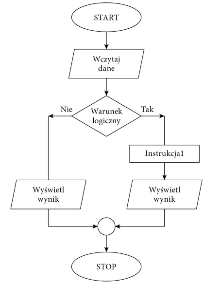
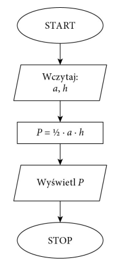
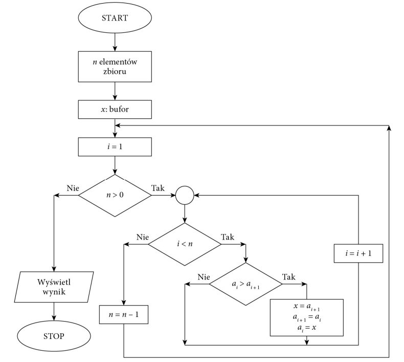
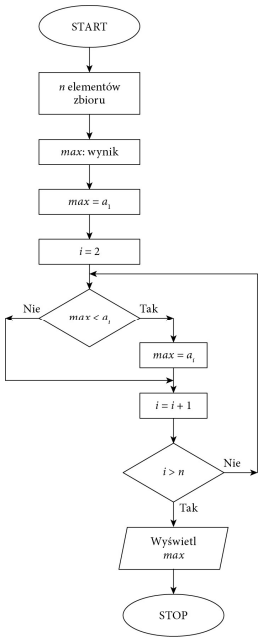

Algorytm
- Algorytm to zestaw ściśle określonych czynności prowadzących do wykonania pewnego
zadania. Określa sposób rozwiązania problemu i ma zastosowanie w różnych dziedzinach. Języki programowania to narzędzia, które bardzo dobrze nadają się do zapisu
algorytmów. Aby napisać dobry program komputerowy, należy opracować skuteczny
algorytm i zdefiniować dla niego odpowiednie struktury danych.
- Algorytm przetwarzania danych powinien przy takim samym zbiorze danych wejściowych zwracać zawsze taki sam wynik. Ale stanie się tak tylko w dokładnie takich samych warunkach i przy tych samych danych pomocniczych. Zwykle przy projektowaniu
algorytmu zakłada się, że dane wejściowe są poprawne, ale bywają algorytmy, które nie
tylko przetwarzają dane, lecz również je weryfikują.
- W rzeczywistości tak jak nie każdy problem można rozwiązać, tak nie każdą metodę
rozwiązania problemu można zapisać przy użyciu algorytmu. Aby problem mógł być
rozwiązany za pomocą komputera, musi zostać zapisany w postaci algorytmu. Wynika
to z tego, że komputer potrafi rozwiązywać tylko problemy, dla których rozwiązanie
zostanie zdefiniowane w postaci jednoznacznych kroków, czyli algorytmu. Jeżeli nie
można zdefiniować rozwiązania w postaci algorytmu, nie ma możliwości rozwiązania
go z wykorzystaniem komputera.
- Zdefiniowany algorytm może zostać zapisany w wybranym języku programowania.
Ale ten sam algorytm może zostać zapisany różnie w zależności od użytego języka
programowania.
- Zapis algorytmu w wybranym języku programowania nazywamy implementacją algorytmu.
Reprezentacja algorytmów
- Algorytm opisujący operacje do wykonania może zostać zapisany w różny sposób.
Może to być zapis słowny, lista kroków do wykonania, pseudokod, drzewo algorytmu
lub schemat blokowy.(T02 Zasady programowania)
Schemat blokowy
W schemacie blokowym operacje, które należy wykonać, są przedstawiane w postaci
graficznej z użyciem symboli.- Algorytm opisujący operacje do wykonania może zostać zapisany w różny sposób.
Może to być zapis słowny, lista kroków do wykonania, pseudokod, drzewo algorytmu
lub schemat blokowy
Schemat blokowy

Przykłady algorytmów
Obliczanie pola trójkąta

Sortowanie liczb
- Jednym z podstawowych zagadnień algorytmicznych jest porządkowanie zbioru danych według określonych jego cech.
Szczególnym przypadkiem porządkowania danych jest sorto- wanie liczb lub słów. Algorytmy sortowania są klasyfikowane
ze względu na sposób działania, złożoność lub stabilność.
Prostą metodą sortowania jest sortowanie bąbelkowe. Polega ono na porównywaniu dwóch sąsiednich elementów i zamianie ich miejscami, gdy są
ustawione w nieprawidłowej kolejności. Sortowanie kończy się, gdy przy kolejnym
przejściu nie ma żadnej zmiany kolejności elementów.

Znajdowanie najmniejszego lub największego elementu
w zbiorze
- Znajdowanie największego elementu w zbiorze nieuporządkowanym:
Dane: n-elementowy zbiór liczb naturalnych
Wynik: max — największa liczba znajdująca się w zbiorze
Krok 1. Przyjmij, że pierwszy element w zbiorze jest największy, czyli max = a1.
Krok 2. Dla kolejnych elementów ai, gdzie i = 2, 3, …, n, wykonaj krok 3. oraz krok 4.
Krok 3. Sprawdź, czy max jest mniejsze od ai.
Krok 4. Jeżeli tak, to dla max przyjmij ai.
